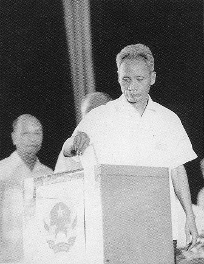

Đặt ra yêu cầu thống nhất về Nhà nước
Thắng lợi năm 1975 tạo điều kiện để xây dựng cơ quan quyền lực chung cho cả nước. Thống nhất lãnh thổ cần được tiếp nối bằng thống nhất tổ chức nhà nước. [1]
HÀ NỘI · 24.06 — 03.07.1976
Kỳ họp đầu tiên của Quốc hội nước Việt Nam thống nhất — dấu mốc hoàn thành thống nhất đất nước về mặt Nhà nước.
CUỘN ĐỂ ĐI QUA LỊCH SỬ ↓01 / TỪ THỐNG NHẤT LÃNH THỔ ĐẾN THỐNG NHẤT NHÀ NƯỚC
Sau ngày 30/4/1975, hai miền vẫn có hai chính phủ. Để tổ chức một bộ máy nhà nước chung, Việt Nam tiếp tục tiến trình hiệp thương, tổng tuyển cử và triệu tập Quốc hội thống nhất. [1]
“Đầu tiên” trong câu chuyện này là kỳ họp đầu tiên của Quốc hội nước Việt Nam thống nhất năm 1976. Khóa Quốc hội ấy mang số VI, tiếp nối năm khóa trước đó. [2]
NHỮNG MỐC NỐI TIẾP
Đất nước bước vào thời kỳ sau chiến tranh.
Tiếp tục cuộn để theo dõi hành trìnhThắng lợi năm 1975 tạo điều kiện để xây dựng cơ quan quyền lực chung cho cả nước. Thống nhất lãnh thổ cần được tiếp nối bằng thống nhất tổ chức nhà nước. [1]
Hội nghị Hiệp thương chính trị thống nhất chủ trương tổ chức tổng tuyển cử trên cả nước để bầu một Quốc hội chung. [3]
Hơn 23 triệu cử tri tham gia bầu cử, lựa chọn 492 đại biểu Quốc hội. Đây là nền tảng đại diện để tiến tới kỳ họp thống nhất. [3]

Nguyễn Hữu Thọ đọc diễn văn khai mạc. Kỳ họp bắt đầu quá trình quyết định những vấn đề nền tảng của Nhà nước thống nhất. [4]
02 / NHỮNG CON SỐ LỊCH SỬ
Từ cuộc tổng tuyển cử ngày 25/4/1976 đến nghị trường thống nhất. [2]
CƠ CẤU THEO NHÓM THÀNH PHẦN
Mỗi chấm tương ứng 1 đại biểu. Đây là biểu đồ số lượng, không phải sơ đồ chỗ ngồi.
Chọn một nhóm để làm nổi bật trên biểu đồ.
Tổng cộng: 492 đại biểu.
Số lượng lấy từ chuyên đề Quốc hội khóa VI của trang tin bầu cử TTXVN [2]: 80 công nhân, 100 nông dân, 6 tiểu thủ công nghiệp, 54 quân đội, 141 cán bộ chính trị, 98 trí thức và nhân sĩ, 13 thuộc các tôn giáo; tổng bằng 492. Tỷ lệ hiển thị được tính bằng số lượng / 492 × 100, làm tròn một chữ số thập phân.
Các phân loại khác như giới tính, dân tộc hay đảng viên có thể giao nhau nên không cộng vào biểu đồ này. Số liệu cơ cấu giữa các bài tổng hợp có khác biệt; trang sử dụng nhất quán bảng của TTXVN cho biểu đồ. Tỷ lệ đi bầu 98,77% lấy từ [4], có mẫu số là cử tri, không phải đại biểu.
03 / NGÀY 02 THÁNG 07 NĂM 1976
Quốc hội thông qua nghị quyết về tên nước, Quốc kỳ, Quốc huy, Thủ đô và Quốc ca. Những quyết định này xác lập các biểu trưng chung của Nhà nước thống nhất. [4]
Nền đỏ, chính giữa là ngôi sao vàng năm cánh.
Hình tròn; có sao vàng, bông lúa, nửa bánh xe răng cưa và tên nước.
Được xác định là Thủ đô của nước Việt Nam thống nhất.
Bài hát được chọn làm Quốc ca.
Diễn giải nội dung nghị quyết theo Cổng TTĐT Chính phủ. [1]
Thành phố Sài Gòn – Gia Định chính thức mang tên Thành phố Hồ Chí Minh. [1]
04 / KIỆN TOÀN BỘ MÁY NHÀ NƯỚC

Chức danh và nhân sự theo Cổng TTĐT Chính phủ. [1]
05 / Ý NGHĨA CỦA KỲ HỌP
Kỳ họp kết thúc ngày 3/7/1976, hoàn thành bước thống nhất đất nước về mặt Nhà nước. Quốc hội quyết định tổ chức bộ máy và thành lập Ủy ban dự thảo Hiến pháp. [3]
Hiến pháp mới chưa được thông qua tại kỳ họp này. Hiến pháp năm 1980 được Quốc hội khóa VI thông qua ở kỳ họp thứ bảy. [2]
TỦ TƯ LIỆU / KIỂM CHỨNG NỘI DUNG
Nội dung được diễn giải từ các nguồn dưới đây. Ảnh là ảnh tư liệu trên web, giữ nguyên nội dung; không dùng ảnh AI hoặc tự phục dựng chi tiết lịch sử.
Ảnh toàn cảnh và ảnh Phạm Văn Đồng bỏ phiếu lấy từ bài [3]. Ảnh cổ động bầu cử Hoàng Liên Sơn lấy từ bài [4], ghi nguồn media.quochoi.vn. Quyền ảnh thuộc chủ sở hữu tương ứng.
Chú thích ảnh toàn cảnh ở bài [3] có mốc “2/6/1976”, không khớp thời gian kỳ họp ngay trong bài và các nguồn đối chiếu. Vì vậy trang chỉ ghi ảnh kỳ họp năm 1976, không dùng mốc ngày này. Ảnh tư liệu được giữ nguyên; thiết kế chỉ thay đổi cách trình bày.